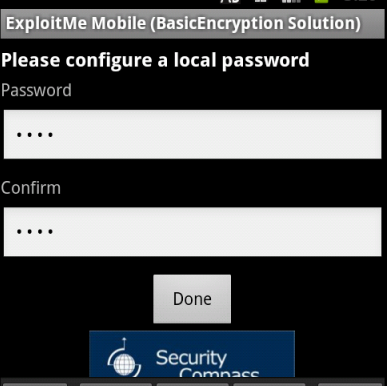
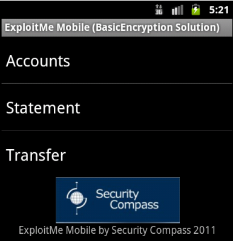
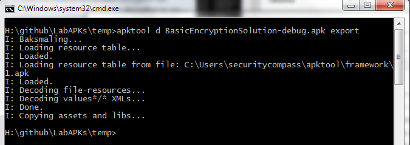
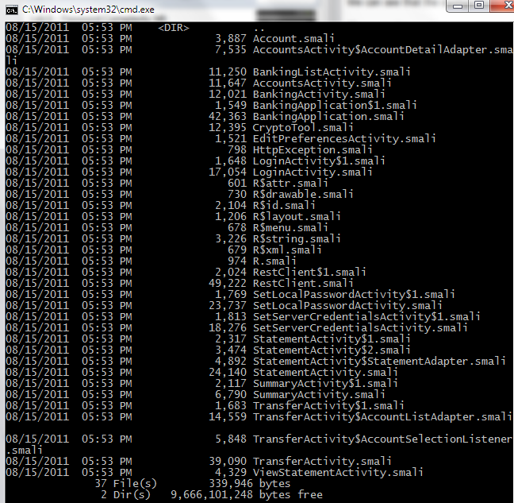

Lab 6 - Advanced Encryption
This lab uses the solution for the Basic Encryption lab. Remember when we coded the encryption to use a pre-shared key to encrypt our user credentials? Turns out that wasn’t the best idea.
Let’s first install the BasicEncryptionSolution.apk on to the emulator.
Configure the BasicEncryptionSolution app, by setting the username and password for the user and configuring a local screen lock password.


When the app has fully loaded, the configuration file for the app will have been set. Let’s take a look and see how the passwords are stored now in the ExploitMe Mobile BasicEncryptionSolution app.

Browse to the
/data/data/com.securitycompass.androidlabs.basicencryptionsolution/shared_prefs
if you remember from the basic encryption lab, the user credentials for this user was stored in a preferences file and stored insecurely on the device. The solution for the lab resulted in implementing a key based encryption to protect the file from casual prying eyes.
Let’s look at preferences.xml

We can see that the configuration file contains encrypted credentials.
There are times when assessing mobile applications you can find that keys are hard coded within the binary itself. There are numerous reasons for this, but one thing’s for sure, its not best practice and should be avoided.
There are a number of ways to discover interesting things about an APK file. One super tool is called apktool. Learn more about it here.
Apktool will decompile or decode apk files into Android smali format. The tool itself works on any APK to extract and reinsert code into the APK file without needing to recomiple. It’s a very powerful tool but for this lab, we will just use it to open up the APK and get the smali from the BasicEncryptionSolution.apk lab.
To use apktool, we run the following:
apktool d BasicEncryptionSolution.apk export

The smali files will be exported into the directory of your choice. If we go into the directory package structure we’ll find a directory of files like what you see below. These are all the smali files or pseudo source code from the Android APK.

We can look through the entire contents of files, but one file looks particularly interesting and that is CrytoTool.smali. Let’s open that up to see what we can find.

You can see above that the code for the encryption key has been hardcoded! Of course, we knew this all along from the solution to the basic encryption lab, but this is an example of how you may be able to find encryption keys from decompiling APKs and looking into their smali files.